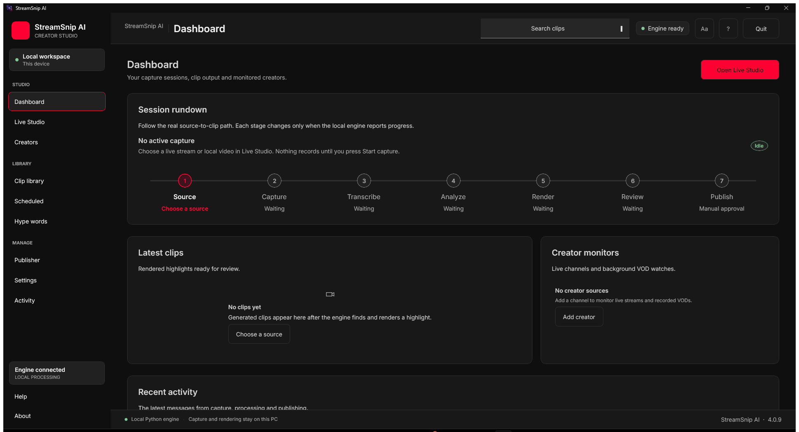

Capture
Live streams, recorded VODs or local videos.
SOURCECapture Twitch and YouTube streams, find the moments worth keeping, and shape them into shorts you can review before publishing.

StreamSnip connects capture, speech, highlight selection and rendering in one desktop workflow. AI helps identify candidates; you decide what becomes a post.
Live streams, recorded VODs or local videos.
SOURCETurn speech into timestamped text locally.
SPEECHScore candidate highlights with your chosen provider.
ANALYSISShape the crop, captions and aspect ratio.
EDITCheck the video and metadata before sending.
DELIVERYOne native Windows workspace for source capture, creator organisation, clip review and publishing preparation.
Capture begins only after you explicitly start it.
Monitor supported Twitch and YouTube creators, record live sessions with explicit controls, or send recorded VODs and local video through the same clipping pipeline.
Each saved creator has an independent workspace with distinct Live and Recorded VOD folders.
Review rendered clips and transcript-grounded post metadata, adjust framing and crop regions, and keep active work separate from confirmed published records.
Connect Zernio, choose the accounts available to your connection, and inspect the result for each destination. The current integration supports Facebook, Instagram and YouTube.
Capture, transcription and rendering run on your Windows PC. External services are used only for the tasks you configure and choose.
◇ The local engine API is bound to loopback. Do not expose it to an untrusted network or the public internet.
Get the native Windows studio, inspect the source, or browse the latest release.